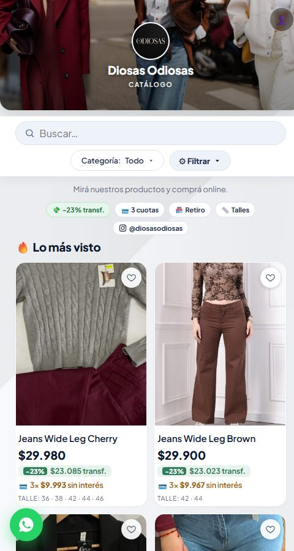
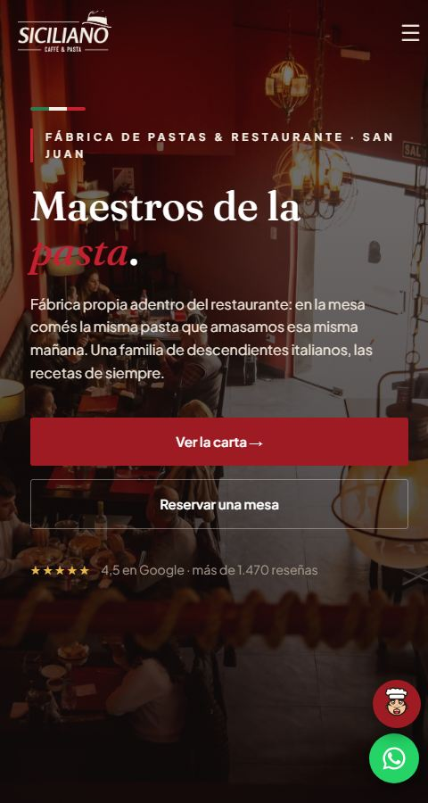
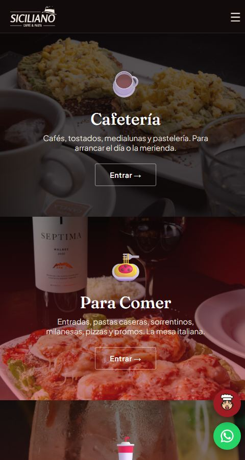
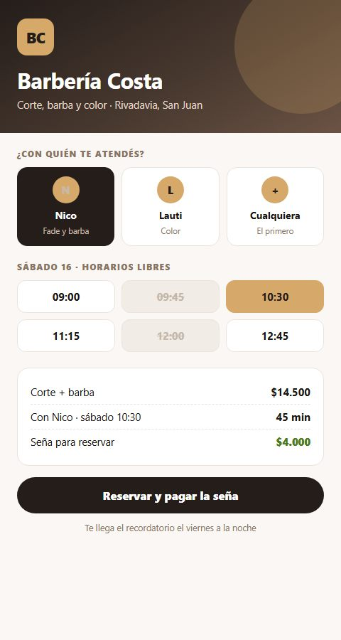
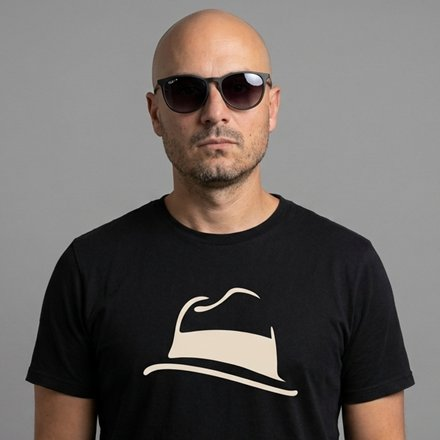

Sistemas a medida · San Juan
Hacemos el sistema que tu negocio necesita: la carga, la cuenta y el control los hace él. Vos, a vender.
Precio cerrado y fecha de entrega · tomamos 3 proyectos por mes
Cómo funciona, de verdad
No te vamos a listar funciones. Te contamos un día entero de tu negocio, de punta a punta. Fijate el color de los puntos: los azules son las pocas veces que tuviste que hacer algo vos.
¿Cuál es tu rubro?
¿El tuyo no está? Se arma igual: lo que cambia es el vocabulario, no el sistema.
Lo hacés vos Lo hace el sistema Lo hace tu cliente
En el mail ya tenés el cierre de ayer: lo que entró, lo que salió y lo que te quedó. Con la comparación que nunca te sentás a hacer: el martes pasado habías vendido 18% menos.
Le sacás una foto a la boleta, la mandás por WhatsApp y te contesta ahí mismo: "cargado, $184.500, vence el 20. Ojo: la harina te subió 18% contra la compra de hace veinte días". No te enterás a fin de mes: te enterás con el tipo todavía parado en la puerta.
Fichan con el celular. Esas horas son las mismas con las que después se arma el sueldo, así que nadie las vuelve a escribir en ningún lado.
Ve tu carta con fotos y precios de hoy, con los platos que querés empujar marcados como recomendados. Lo que se acabó no aparece, así que nadie pide algo que no tenés.
El pedido entra derecho y se parte solo: los platos salen en la cocina y las bebidas en la barra. Y cuando eligen la milanesa, la carta les ofrece lo que vos decidiste que va con eso: la guarnición, el vino, el postre. El mozo que nunca se olvida de ofrecer.
Le llega el aviso al que atiende esa mesa. Nadie levanta la mano ni se queda mirando al salón esperando que alguien lo mire.
Los que no quieren usar el celular le piden al mozo de toda la vida, y él lo carga en el suyo. Las dos formas caen en la misma comanda, así que la cuenta de esa mesa es una sola.
La calificación es de él, no del local: se la lleva a donde vaya a trabajar. Después le aparece tu alias para dejar propina y el link para calificarte en Google, justo cuando acaban de comer bien.
Elige el día, deja la seña y le llega la confirmación. La mesa queda tomada y la plata entra a tu cuenta, no a la nuestra.
A los que comieron y hace tres meses que no aparecen les llega un mail tuyo. No lo escribiste hoy: se arma con la lista que el sistema ya tiene, lleva el link para darse de baja y después sabés quién lo abrió. Los mensajes que te entran por Instagram y Facebook los contesta la misma IA.
Son seis y pagan por separado: dos con transferencia, el resto en efectivo. Se divide en la pantalla y cada parte queda anotada donde va.
El sistema te dice cuánto tendría que haber, contás y confirmás. Si falta, sabés de cuánto es la diferencia esta misma noche y no dentro de un mes.
El sistema repasa el día solo: una comanda quedó abierta, un producto se vendió por debajo de lo que te cuesta y el seguro de la camioneta vence el jueves. Todo eso te espera en el mail de mañana.
Salen de las horas que ya fichó cada uno, con los adelantos que se llevaron durante el mes ya descontados. No hay un Excel aparte.
La diferencia
Fudo es muy bueno en lo suyo, y lo suyo es el salón: la comanda, la cocina, el cobro. No venimos a discutirle eso. Venimos por las otras veinte horas del día, las que igual terminás haciendo vos.
Ninguna de esas cosas es magia. Son las que ya están andando todos los días en los negocios de acá abajo.
Andando ahora mismo
Abrilas desde tu celular. Son negocios reales vendiendo hoy.




Andando hoy, en negocios reales
Si lo tuyo se parece a algo de esto, la mitad del camino ya está hecha.
Funciona
Cuánto sale
Y si querés arrancar sin gastar: el registro laboral de Aval.ar es nuestro y lo usás gratis, nos compres o no.
Un turnero suelto, o un sistema de stock suelto, o el de sueldos suelto. Cada uno con su abono y ninguno se habla con el otro.
Tener un sistema de este nivel dejó de ser caro. Eso también es la IA.
Antes de que preguntes
El primer mes no lo pagás.
Sin permanencia. Te vas cuando quieras.
Te los llevás en Excel cuando los pidas.
Los capacitamos. Está incluido.
Nos escribís y lo arreglamos nosotros.
Hablás con quien lo hizo, no con un call center.

VMQuién te lo va a hacer
Tengo un restaurante en San Juan y hace años uso inteligencia artificial para producir. Primero fueron videos; hoy son los sistemas que corren en mi propio negocio y en los de mis clientes. El que te va a atender soy yo.
Un par de preguntas, y te contactamos con el presupuesto en la mano.
Esta charla es la prueba de manejo: es la misma IA que va a trabajar adentro de tu sistema.
¿Preferís hablar conmigo? Escribime por WhatsApp →